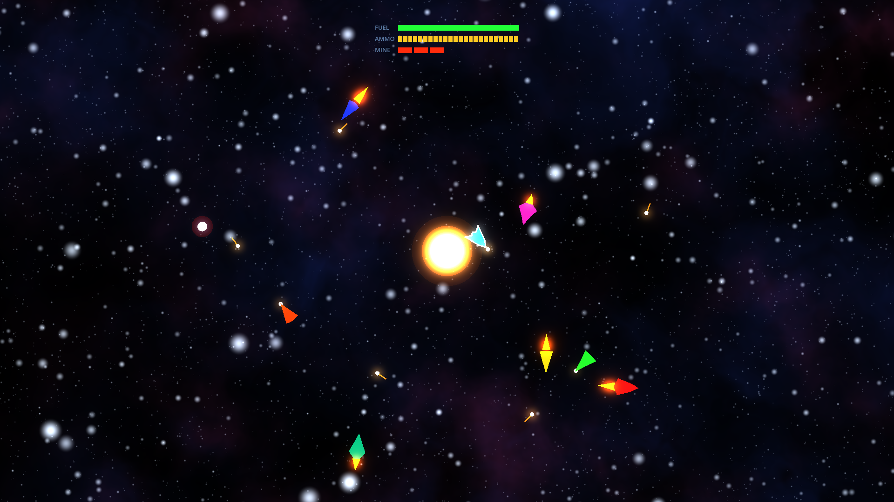
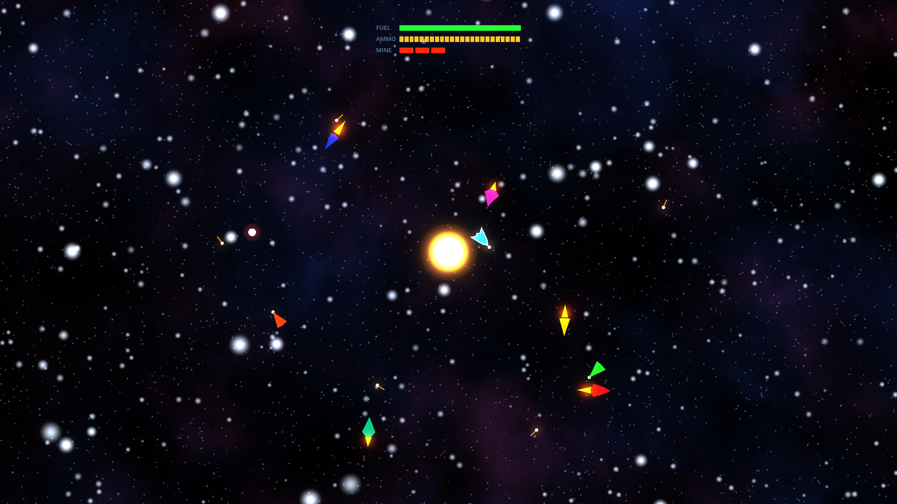
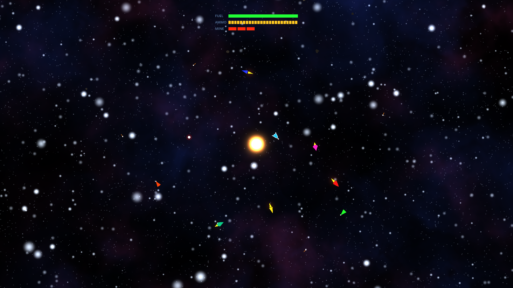
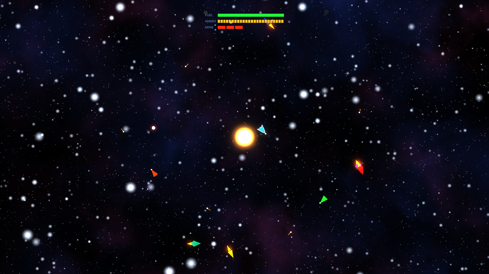
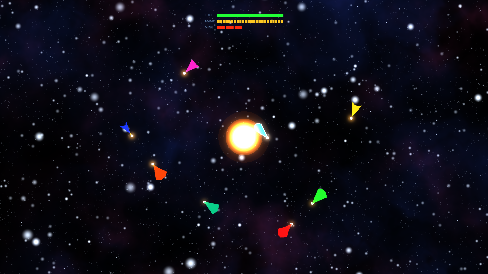

AI-driven networked dogfights · real Newtonian gravity · 100% procedural · up to 16 ships
XSpaceWar-AI is a modern, AAA-styled networked space-fighter with a strong AI focus —
a 2026 reimagining of the classic networked Spacewar! / xspacewar.
Bird's-eye view like the 1962 original, but with space-accurate Newtonian
physics, 100% procedurally generated graphics and audio (every
sound synthesized from math at load), and LAN + internet multiplayer for up to 16
ships. Built in Godot 4. Free, Apache-2.0.





Opening on macOS: the build is ad-hoc signed but not notarized, so Gatekeeper may say “XSpaceWar-AI is damaged and can’t be opened.” It isn’t damaged — right-click the app → Open → Open, or run xattr -dr com.apple.quarantine /path/to/XSpaceWar-AI.app.
Stands on one of gaming's oldest lineages — Spacewar! (MIT, 1962, PDP-1),
the 1974 PDP-11 networked port, and Ron Frederick's 1992 X11 xspacewar 1.2.
An original clean-room implementation.
Roger Bergling · Kevin Christiansen (PE) · Brad Cramer · Claude Fable 5 · Trevor Flurry · Henry Hannah · Patrick Hannah · Shannon (Learn) Koski · Beaux Onofrio · Nick Onofrio · Adam Testagrossa · Nate Tiller · John Van Lowe · Jeremy Zhao
To John Van Lowe (JVL), for all the nights gaming in 90s-era Dickinson, Texas.
HTMFPWGCBNOTDOD!